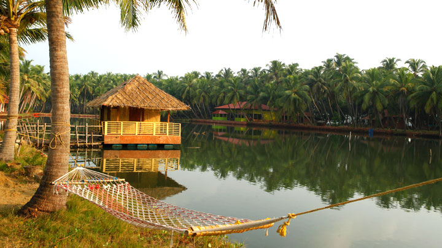
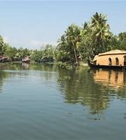
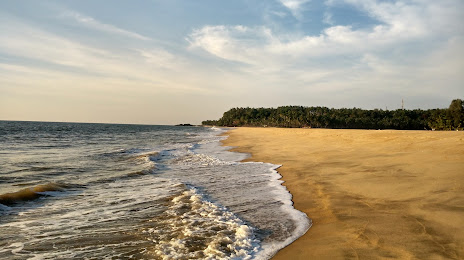
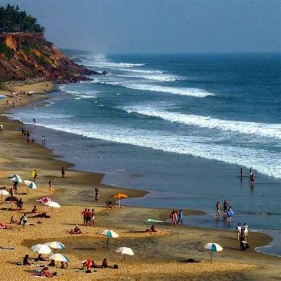

TOP DESTINATIONS
-

Parappa Wildlife Sanctuary
A paradise for nature lovers and a fine ranked in the list of tourist places in Kasaragod. It is a natural habitat of some underrated fauna like a slow turtle, the prickly porcupine, Malabar hornbill, Slender loris, and the cute wild jungle cat. If wilderness attracts you, this locale is a must visit for some great wildlife photography. Hike around the sanctuary and click around some rare species. Location: Approximately 50 kilometers away from Kasaragod.
-

Valiyaparamba Backwaters
This is perhaps the most scenic backwater stretch in Kerala. Fed by four rivers and dotted with numerous little islands, Valiyaparamba is fast turning into a much favoured backwater resort that offers enchanting boat cruises. It is situated about 30 km from Bekal.
-

Chandragiri Cruises (Backwater):
Boat trips to nearby islands and palm groves. Boarding point: Chandragiri bridge. Situated on the Chandragiri river, south east of Kasaragod town, this town is known for its large 17th century fort built by Sivappa Naik of Bedanore. The Chandragiri fort, one of a chain of forts built by the same ruler, offers a breathtaking view of the river and the Arabian Sea. It is a vantage point to watch the sunset.
-

Kappil Beach
Kappil is a beautiful beach-backwater destination located near Varkala, the famous tourist spot. A drive through Kappil is as scenic as it can get; the road is flanked by the azure blue of the Arabian sea on one side while the serene waters of Edava Lake is on the other.
-

Pallikere Beach
This shallow beach offers a spectacular view of the fort, and has ample facilities for recreation and relaxation. It is situated about a km from Bekal Fort.